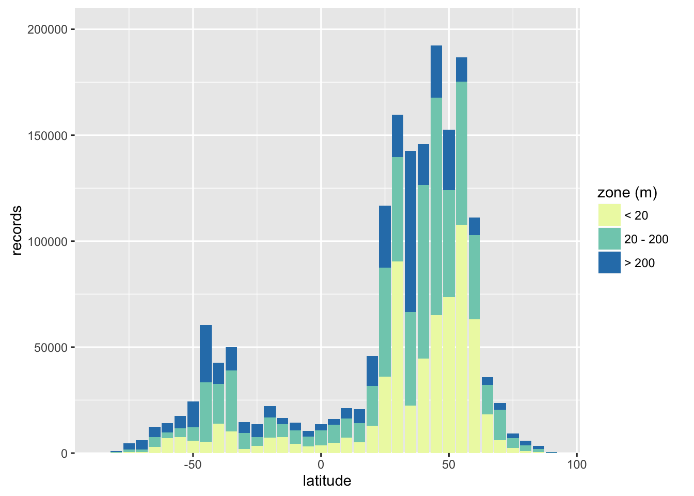
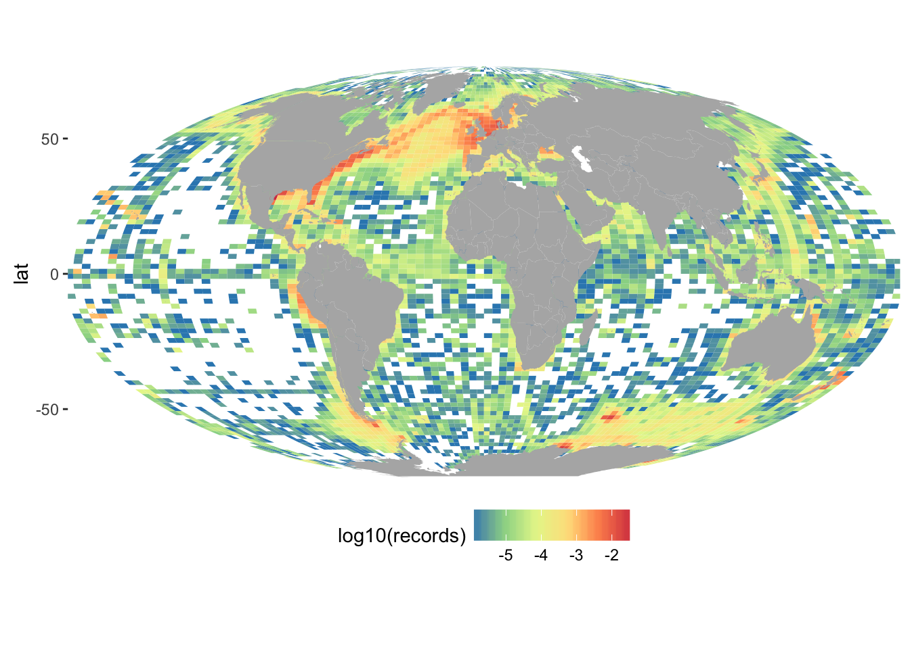
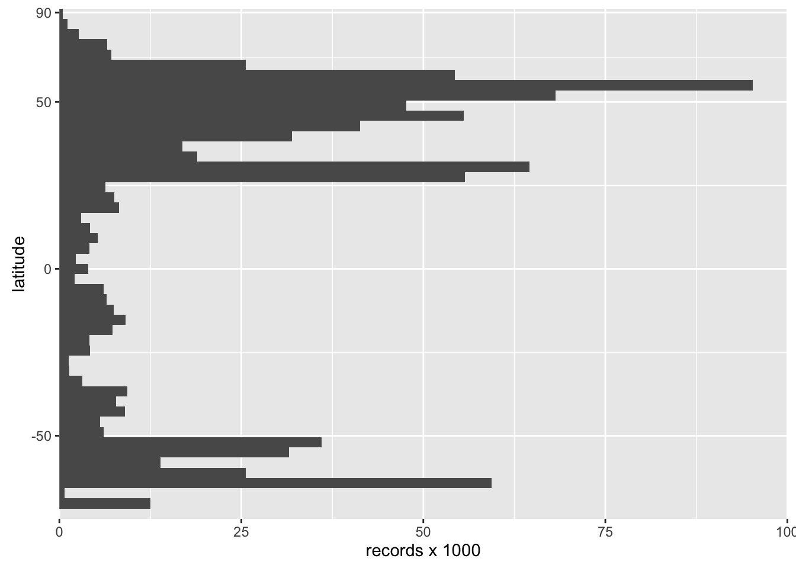

OBIS Records Map & Histogram
Ben Best
October 5, 2016
load
# load libraries
suppressPackageStartupMessages({
require(dplyr)
require(ggplot2)
library(rgdal)
})
# load data provided by Peter Provoost (2016-10-03)
load("obis.dat")
# filter data to valid lon/lat and depth <= 20m
d = data %>%
rename(lon = longitude, lat=latitude) %>%
filter(
!is.na(lon), !is.na(lon),
depth <= 20) %>%
mutate(
lon = ifelse(lon < -180, 360 + lon, lon),
x = lon,
y = lat)hist_depth_gcs
Summarize records by 5 decimal degrees and generate histogram with x-axis aligned in geographic coordinate system (gcs).
# summarize data by 5 deg bins and depth
d_sum <- data %>%
filter(
latitude <= 90 | latitude >= -90,
!is.na(depth)) %>%
mutate(
zone = cut(depth, c(0, 20, 200, Inf), labels=c('< 20', '20 - 200', '> 200')),
band = round(latitude / 5) * 5) %>%
group_by(band, zone) %>%
summarize(
records = n())
# histogram of depth by latitude
ggplot(d_sum, aes(x = band, y = records, fill = zone)) +
geom_bar(stat = 'identity') +
scale_fill_brewer(palette='YlGnBu', name='zone (m)') +
scale_y_continuous(expand = c(0, 0)) +
labs(x='latitude')
map_lt20m_mol
Summarize records using ggplot2::geom_bin2d() filtered by all records less than or equal to 20 m depth (lt20m) with 100 bins and log10 scale to show variation and project to Mollweide (mol) for more area-realistic map.
n_bins = 100
world = map_data('world')
m = ggplot() +
geom_bin2d(
aes(x=lon, y=lat, fill=log10(..density..)), data = d, bins=n_bins) +
geom_map(data=world, map=world, aes(x=long, y=lat, map_id=region), fill = 'grey70') +
coord_map("mollweide", xlim=c(-180, 180)) +
scale_fill_distiller(type='div', palette='Spectral', name='log10(records)') +
ylab('latitude') +
theme(
panel.background=element_blank(),
axis.text.x=element_blank(), axis.ticks.x=element_blank(), # x ticks
axis.title.x=element_blank(), # x title
legend.position='bottom')
# save plot
pdf('map_obis-records.pdf')
print(m)
invisible(dev.off())
# output
m
hist_lt20m_mol
Histogram of records using the same vertical axes as the Mollweide map for manually aligning after.
# project lonlat bins to mollweide for adding histogram to margin of map
coordinates(d) = ~x+y
proj4string(d) = CRS('+init=epsg:4326')
d_mol = spTransform(
d,
CRS("+proj=moll +lon_0=0 +x_0=0 +y_0=0 +ellps=WGS84 +units=m +no_defs"))
xy_mol = coordinates(d_mol) %>% as.data.frame()
# interpolate latidude in decimal degrees to Mollweide (m)
y_brks = approx(
d@data$lat, xy_mol$y,
c(-90, -50, 0, 50, 90))
# plot histogram of records by latitude
h = ggplot(xy_mol, aes(x=y)) +
geom_histogram(aes(y = ..count../1000), bins=50) +
scale_x_continuous(
name = 'latitude',
breaks = y_brks$y,
labels = y_brks$x,
expand = c(0,0)) +
scale_y_continuous(
limits = c(0,100),
expand = c(0,0)) +
labs(x=NULL, y='records x 1000') +
coord_flip()
# save plot
pdf('hist_obis-records.pdf')
print(h)
invisible(dev.off())
# output
h
map_hist_lt20m_mol
Manually combined the map and histogram in Adobe Illustrator from the pdf outputs: map_hist_obis-records.pdf + hist_obis-records.pdf -> map_hist_obis-records.pdf.
old: map_hist_mol
For comparison, here’s the manually combined map and histogram for all depths (ie not filtered by <= 20m): map_hist_obis-records_alldepths.pdf.